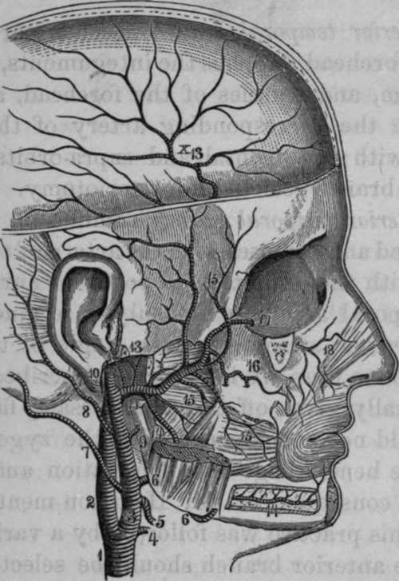

The Internal Maxillary Artery
Description
This section is from the book "Anatomy Of The Arteries Of The Human Body", by John Hatch Power. Also available from Amazon: Anatomy of the Arteries of the Human Body, with the Descriptive Anatomy of the Heart.
The Internal Maxillary Artery
The Internal Maxillary Artery may be exposed in the following manner: having removed the brain and uncovered the masseter muscle, we may carry a very small and pointed saw upwards behind the posterior extremity of the zygoma, and divide it from within outwards as near its roots as possible. We next remove the roof and contents of the orbit in the usual manner, and sink the point of the saw into the anterior extremity of the spheno-maxillary fissure, and from this point make two incisions; one upwards and outwards through the outer wall of the orbit to terminate at the external angular process of the frontal bone: the other downwards and inwards through the floor of the orbit to terminate on the outside of the supra-orbital foramen. These two incisions will include the greater part of the malar bone, and the zygoma will fall down, carrying with it the masseter muscle. Our next object is to detach the temporal muscle and vessels from the temporal fossa, and allow them to hang down from the coronoid process of the inferior maxillary bone. We then introduce a knife into the temporo-maxillary articulation above the fibro-cartilage, and divide the portion of the capsular ligament which connects the latter to the circumference of the glenoid cavity. Lastly, we make two incisions, meeting internally at an angle, so as to include the greater part of the squamous plate of the temporal bone, and the great wing of the sphenoid bone; one of these incisions may commence immediately in front of the ear, and be continued vertically down through the side and base of the skull till it terminates immediately behind and external to the spinous process of the sphenoid bone; the second may be made with a small saw, and as the malar bone is already removed, the incision may be readily made to connect the inferior angle of the sphenoidal fissure with the internal extremity of the preceding incision: on the inside of the latter, the foramen ovale and foramen rotundum should lie unopened. A slight stroke of the hammer against the bone between these two incisions will detach it, and give a full view into the zygomatic fossa: the branches of the artery may then be dissected. The vidian and posterior palatine canals can be readily broken into, if a vertical section of the skull be previously made through the adjacent nostril. The artery may be very readily exposed by another method: after the transversalis faciei artery, together with the masseter muscle and its superficial relations, have been examined and removed, a horizontal section may be made through the ramus of the inferior maxilla immediately above its angle with a fine metacarpal saw; care being taken that none of the soft parts under cover of the bone shall be injured: another horizontal section may now be made through the neck of the jaw, immediately below the condyle, and the coronoid process removed from its connection with the temporal muscle. The piece of bone included between the two incisions may also be removed, and afterwards can be replaced at pleasure. The zygomatic arch should be next taken away, and this may be done by two incisions,—one made posteriorly through this process of bone, close to its origin,—the other anteriorly, close to the external part of the orbit through the zygomatic process of the malar bone.
Fig. 14. Internal Maxillary Artery.
1, Right Common Carotid. 2, Internal Carotid. 3, External Carotid. 4, Superior Thyroid. 5, Lingual. 6, Facial. 7, Occipital. 8, Posterior Auricular. 9, Parotid Branch. 10, Temporal Artery. 11, Internal Maxillary. 12, Tympanic. 13. The Great and Small Meningeal Arteries from a Common Branch. 14, Inferior Dental Artery. 15, Muscular Branches. 10, Superior Maxillary Artery giving off the Posterior Dental Arteries. 17, 18, Infra-orbital Artery.
The internal maxillary artery is larger than the temporal, and together with it is contained for a very short distance within the parotid gland. It may be divided into four stages: the first stage extends from its origin to the inter-pterygoid space; its second corresponds to this space; its third extends from this space to the upper part of the pterygo-maxillary fossa, and the fourth is the termination of the artery in this fossa. In its first stage it runs horizontally forwards and lies on the inside of the lower portion of the neck of the inferior maxillary bone, which it separates from the internal lateral ligament of the temporo-maxillary articulation: the bone is frequently grooved in this situation for the reception of the artery. In its second stage we find it passing forwards and inwards, forming a curvature the concavity of which looks upwards and embraces the external pterygoid muscle: in this part of its course it lies in a triangular space, bounded by the external pterygoid muscle above, the internal pterygoid beneath, and the ramus of the lower jaw externally. In the same triangular space we observe the gustatory and inferior dental nerves, descending to their destination, but, as the artery lies close to the neck of the inferior maxilla, it is situated external to these nerves. In the third stage we find the artery running upwards and inwards towards the root of the pterygoid process, after passing between the outer surface of the external pterygoid muscle, and the fibres of the temporal muscle. In this situation the artery is related to the buccal nerve; at first the artery is posterior to the trunk of the nerve, and afterwards lies upon a plane external to it. Finally it sinks between the two origins of the external pterygoid muscle, and terminates in the pterygo-maxillary fossa lying to the outside of Meckel's ganglion, and the spheno-palatine foramen: this constitutes its fourth stage. In some (not very rare) cases the artery passes to its destination, not through the inter-pterygoid space as above described, but between the external pterygoid muscle and the base of the skull. We shall now examine its branches in the order in which they arise.
The internal maxillary artery gives off the following branches:—
Middle Meningeal.
Tympanic.
Inferior Dental.
Meningea Parva.
Posterior Deep Temporal.
Masseteric.
Pterygoid.
Buccal.
Anterior Deep Temporal. Posterior Superior Dental. Infra-Orbital. Yidian.
Superior Palatine. Spheno-Palatine.
Continue to: